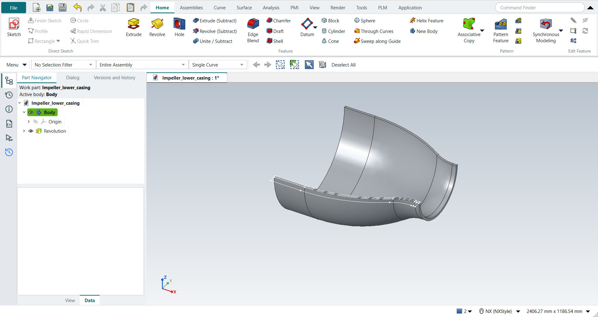
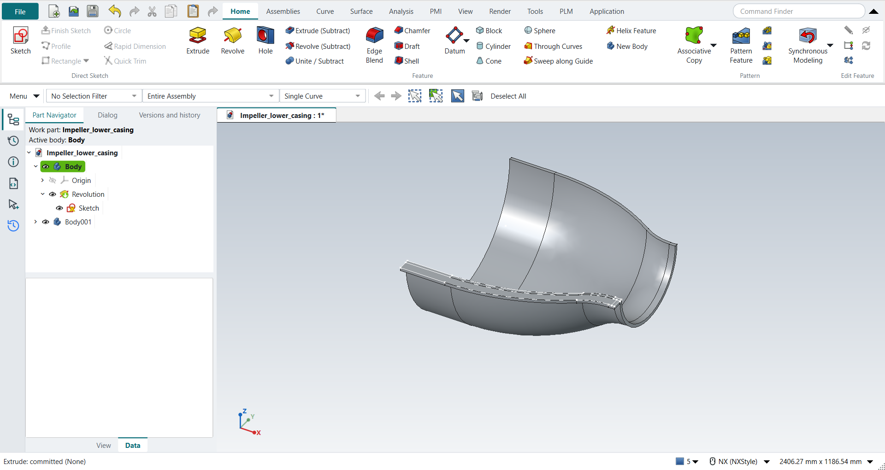
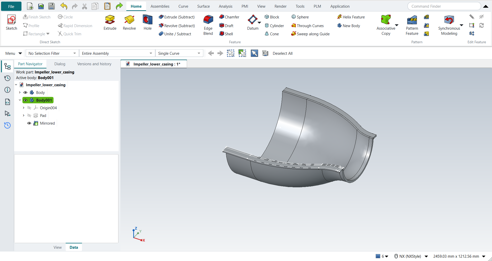
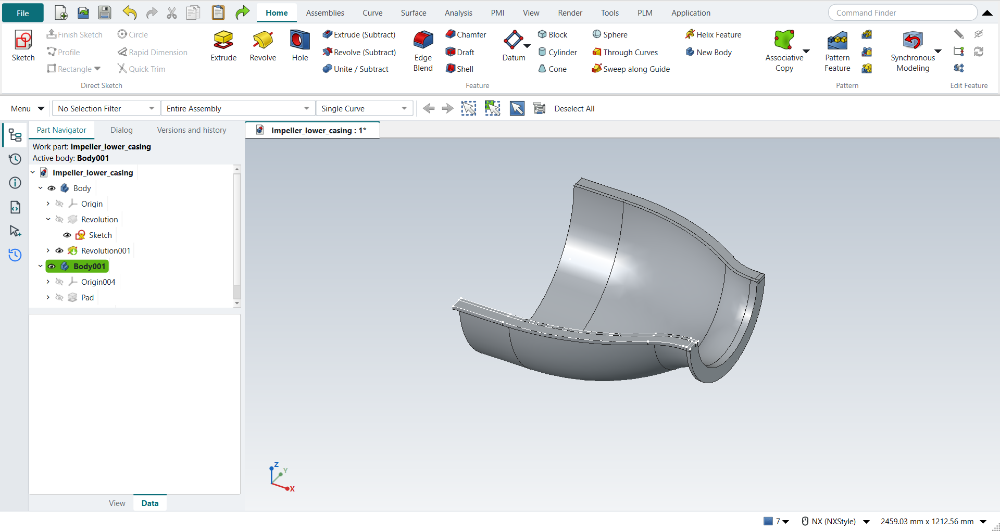

Tutorial AO: Impeller Lower Casing, Extrude and Revolve
| Source |
Ming C. Leu, Wenjin Tao, Amir Ghazanfari and Krishna Kolan, NX 12 for Engineering Design (Missouri University of Science and Technology), section 4.4 (Swept Features). It continues the casing sketch of section 3.5.2, tutorial AG; tutorial AX turns it into the upper casing. |
| You learn |
the Curve Rule (Single Curve), Revolve with Specify Vector, Specify Point and the angle limits, Extrude of picked curves as a body of its own, QuickPick for curves that lie on a solid, Mirror Feature |
| Sizes |
the book’s, in inches, typed in millimetres. The wall and the flange revolved about XC through (0, 0, 0) from 0 to 180°. The edge extruded 0.5 (12.7 mm) along -ZC. |
The replay runs tutorial AG first and opens the part it saved.
Step by step
1. The wall
Open Impeller_lower_casing, the part of tutorial AG.
Click Revolve.
FreeCAD first offers its list of sketch planes; you don’t need it, because picking a curve of the sketch closes the list and opens the Revolve dialog with that curve.
Set the Curve Rule on the Top Border Bar (beside the Selection Filter) to Single Curve. The default, Inferred Curves, would take the whole sketch, which is not one closed profile. Click the 10 curves of the wall: the inner curve’s four, the four of the curve 0.5 above it, and the two short lines that close its ends.
In the dialog choose XC in Specify Vector, keep Specify Point at (0, 0, 0), and type Start 0 and End 180. Click OK.

2. The edge
Click Extrude, keep Single Curve, and click the 10 curves of the edge: the inner curve’s four again, the four of the curve 1.5 below it, and the two lines that close its ends. Most of these curves now lie on a face or an edge of the wall as well. Press and hold MB1 on the curve, as the book’s note says, and choose the sketch curve in QuickPick.
Keep Boolean None. Type 12.7 mm (0.5 in) as the length and tick Reversed in FreeCAD’s panel, which turns the extrusion to -ZC. Click OK.
The edge becomes a body of its own. With Unite it would touch the wall only along a line, which would leave two solids in one body, so the dialog does not allow it.

3. The edge on the other side
Make the edge’s body the work body, select its Extrude in the Part Navigator, and click Mirror Feature (Home › Pattern). Choose the plane XZ, the plane through the casing’s centre line, and press MB2.

4. The flange
Click Revolve again and, with Single Curve, click the 4 sides of the flange at the casing’s smaller opening. Two of them lie on lines of the wall and of the edge: QuickPick lists both, and you choose the flange’s. Choose XC, keep (0, 0, 0), and type Start 0 and End 180. The Boolean is Unite, with the wall, by itself; click OK.

Save the part.
The replay
| # | In the book (NX) | In FreeCAD NX-Style | Result | Notes |
|---|---|---|---|---|
AO1 |
Open Impeller_lower_casing (tutorial AG’s part) |
File > Open (by script) |
same |
the sketch with 19 of the 19 curves of the book’s figure; shown True |
AO2 |
Revolve, Selection Filter Single Curve, the 10 curves of the wall |
ribbon 'Home › Feature > Revolve' (FreeCAD asks for a plane: True), Curve Rule 'Single Curve', MB1 on each curve: 10 by click |
same |
the section holds 10 curves, the wall’s True; the first pick closes FreeCAD’s plane list and opens the dialog with it |
AO3 |
Axis: Specify Vector XC, Specify Point (0, 0, 0); Start 0, End 180 |
'XC' chosen, X, Y, Z and the angles typed in the box |
same |
axis {'vector': 'XC', 'point': (0.0, 0.0, 0.0)}, limits (0.0, 180.0) |
AO4 |
OK: the revolved wall |
OK clicked |
same |
volume 10035706.5 mm^3, expected 10035706.5; 1 solid(s); Profile the 10 curves True; below the sketch plane True; one undo step True (['Revolve']) |
AO5 |
Extrude, Single Curve, the outer curves of the casing (its edge) |
ribbon 'Home › Feature > Extrude' (plane asked: True), Curve Rule 'Single Curve', MB1 on each curve: 9 by QuickPick, 1 by click |
same |
the section holds 10 curves, the edge’s True; where a curve lies on the wall’s face, QuickPick lists it (the book’s note: press and hold MB1) |
AO6 |
Extrude it 0.5 in along -ZC, OK |
Boolean 'None' in the box; 'lengthEdit' = 12.7 mm and Reversed clicked (True) in FreeCAD’s panel; OK clicked |
same |
volume 381783.6 mm^3, expected 381783.6; z -12.70 to 0.00 mm; its own body (2 bodies): with Unite it would touch the wall only along a line, two solids in one body, so the edge is a body of its own, as the book’s Solid Body filter in the next step shows |
AO7 |
Mirror the edge through the centre plane, Copy |
the edge’s body made the work body and its Extrude selected (Part Navigator) + ribbon 'Home › Pattern > Mirror Feature', plane 'Base XZ-plane', MB2 = OK |
differs |
the edge’s body holds 2 solids, 763567.1 mm^3 (twice 381783.6), symmetric about XZ (y -419.1 to 419.1 mm). NX’s Edit > Transform copies the solid unparametrised; Mirror Feature keeps the copy following the edge |
AO8 |
Revolve, Single Curve, the 4 curves of the flange |
ribbon 'Home › Feature > Revolve' (plane asked: True), Curve Rule 'Single Curve', MB1 on each curve: 4 by QuickPick |
same |
the section holds 4 curves, the flange’s True; two of them lie on the wall’s and the edge’s lines, and QuickPick tells them apart |
AO9 |
XC through the origin, Start 0, End 180, as for the casing |
'XC', X, Y, Z and the angles typed; Boolean Unite by itself |
same |
axis {'vector': 'XC', 'point': (0.0, 0.0, 0.0)}, limits (0.0, 180.0), Boolean unite |
AO10 |
OK: the flange, united with the wall |
OK clicked |
same |
volume 10377414.8 mm^3, expected 10377414.8; 1 solid(s); the flange’s volume added to the wall’s |
AO11 |
The lower casing: the wall with its flange, the edge on both sides |
compared with the book’s curves revolved and extruded by the Part API |
same |
wall and flange: same solid as the reference: 0 mm³ differ, box within 0 mm, 14 faces (14 in the reference); edges: same solid as the reference: 0 mm³ differ, box within 0 mm, 24 faces (24 in the reference) |
AO12 |
Save the model |
file name given once by script (the system file dialog is not driven); a change, then the Ctrl+S key |
same |
Impeller_lower_casing.FCStd rewritten by Ctrl+S: the file holds the change and the part is unmodified afterwards (modified before the key: True); FreeCAD format, not .prt |
| Result | Means |
|---|---|
same |
The book’s NX steps work as written. |
differs |
It works, but the FreeCAD way is different; the notes say how. |
limit |
The book’s way fails in FreeCAD itself; a workaround follows in the next steps. |
missing |
FreeCAD has no such function; a stand-in follows. |
skipped |
Not replayed; the notes give the reason. |
FAILED |
Did not work. |
The finished casing is compared with the book’s curves revolved and extruded by FreeCAD’s Part API: the wall with its flange, and the edge on both sides.
What differs from NX
-
NX’s Revolve and Extrude start with the Section selection. In FreeCAD a feature without a sketch first offers the sketch planes; picking a curve instead closes that list.
-
NX’s Extrude limits give the direction. Here the length and the direction are set in FreeCAD’s panel under the NX dialog: 12.7 mm with Reversed is NX’s 0.5 in along -ZC.
-
The book mirrors the edge with Edit > Transform > Mirror Through a Plane and Copy, which makes an unparametrised copy. NX-Style uses Mirror Feature, so the copy follows the edge when it changes.
-
Mirror Feature mirrors a feature inside its body: the edge’s body then holds both edges, two separate solids.